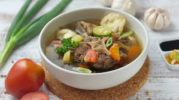

Bahan |
Cara Memasak |
Sop Buntut

Bahan :
1 kg buntut sapi.
2 cm jahe, digeprek.
1 btg daun bawang, iris.
1 sdm, minyak goreng.
200 gr wortel, potong serong atau dadu.
250 gr kentang, potong dadu.
Pala bubuk secukupnya.
Air untuk merebus secukupnya.
Bumbu Halus:
6 bh bawang merah.
3 bh bawang putih.
1 sdt merica bulat.
Pelengkap :
- bawang merah goreng.
- tomat, potong dadu.
- daun bawang iris kasar
Cara memasak :
- Masukkan buntut dalam panci hingga terendam air, rebus di atas api sampai mendidih.
- Buang buih yang terapung diatas dan air rebusan pertama buntut.Hal ini berguna agar kaldu tidak berbau.
- Panaskan minyak goreng, kemudian tumis bumbu halus.
- Selanjutnya masukkan bubuk pala, jahe, daun bawang hingga harum.
- Berikutnya masukan buntut dan beri air.
- Rebus dalam panci tertutup dengan api kecil.
- Rebus wortel dan kentang di panci terpisah hingga matang, kemudian tiriskan..
- Setelah buntut lunak, ambil buntutnya lalu saring kaldunya, kemudian masukkan kembali buntut ke dalam kaldu yang sudah disaring.
- Didihkan buntut kembali dengan api kecil.
- Letakkan wortel dan kentang ke dalam mangkuk kemudian tuangkan kaldu dan buntut, kemudian beri taburan pelengkapnya.
kembali ke atas
<< Daftar Resep